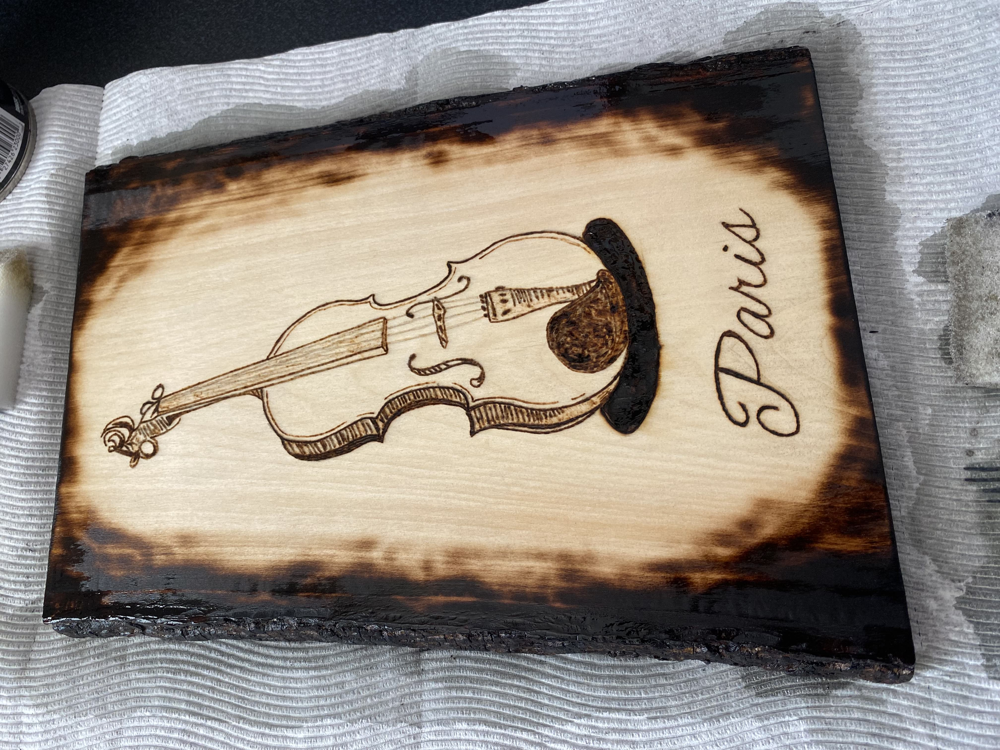
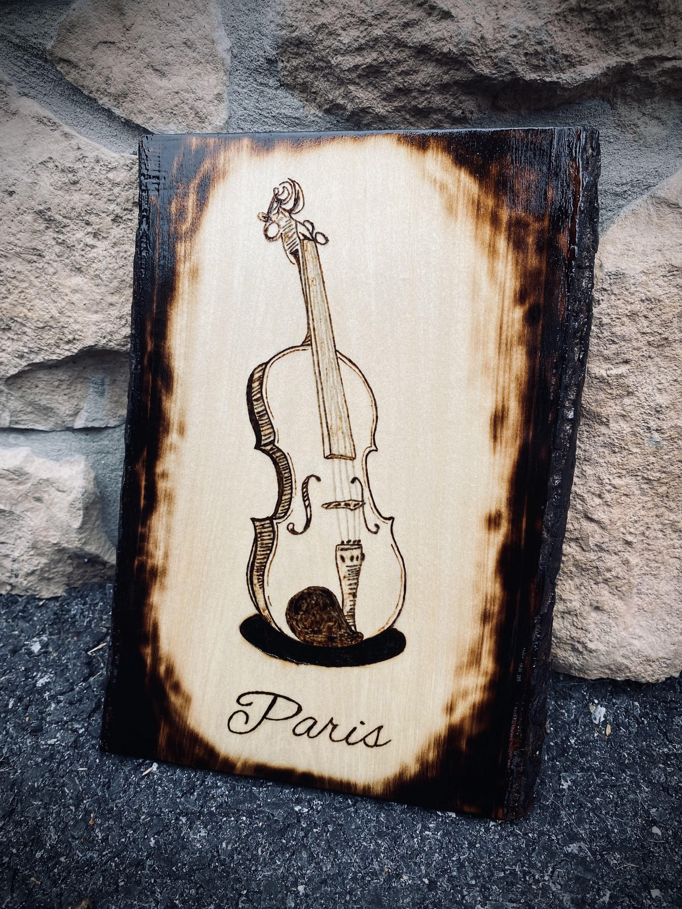

How to Create a Woodburning
Finish
- This is optional, but if you want to give it a border, get a torch or lighter and burn the edges. Use caution.
- Using the foam brush, put an even coat of polyurethane on all sides of the piece. Let it dry, which may take an hour or so. It may require multiple coats to get a smooth texture. Once dry, you’re finished!

